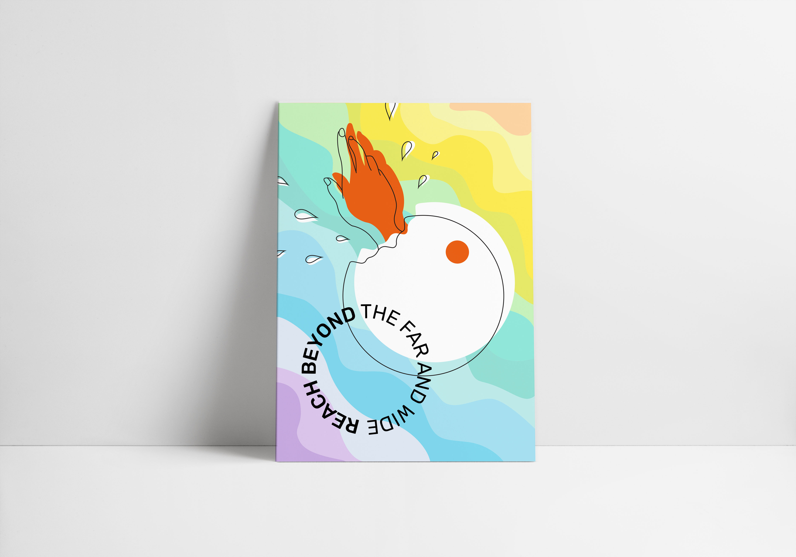
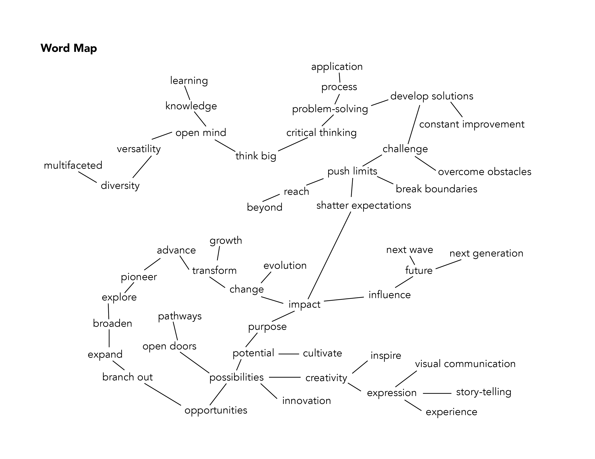
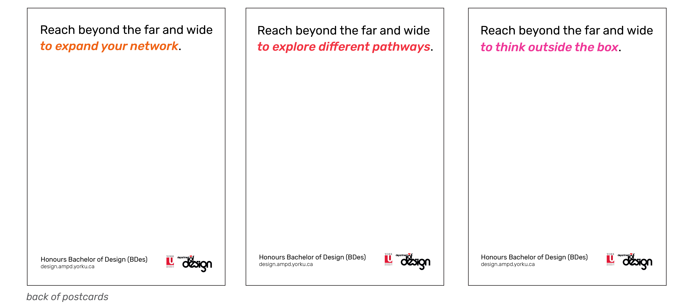

Sep - Dec '20 (12 weeks)
Adobe Illustrator, Adobe InDesign, Adobe Photoshop
In class, we were challenged to design a set of three 4 x 6 postcards to promote the York University Bachelor of Design Program. We also had to develop a slogan that would represent the program.
This tagline was inspired by the way the Honours BDes encourages one to push boundaries and opens so many doors to its students. Building wider networks, learning to think outside the box and exploring different pathways and possibilities were some of the ways in which students are able to go beyond what they thought their limits were. I decided to use circles, triangles and squares as the shapes for each postcard since they’re the three basic design elements. Each shape was to represent a different “wall” or “box” that was being broken out of.
For the first postcard, the circle represents the “bubble” that a person lives in: breaking out of it allows you to expand your network and build a larger community. Whether it’s by connecting them with alumni, introducing them to industry professionals through workshops, or sending them abroad through exchange programs, the program allows students to come out of their shells to meet people outside of their classrooms and even their campus. It’s an essential part of the program because networking and building human connections go hand in hand with communication, which is at the core of design.
In order to figure out what main points I wanted to get across about the York BDes were, I created a mindmap of words that were related to the program. There were a lot of concepts that came up in my research, but my word map could be condensed into a few keywords: beyond, pathways, network and innovation.
I wanted to emphasize this concept by creating a lot of contrast between the background (waves) and the foreground elements (the hand breaking out of the shape) through color and texture. The foreground elements represent the student shattering all the barriers that are blocking them from reaching their full potential. The background represents the world of possibilities that students are introduced to by the program.
Change is necessary for improvement, and because design is an always-evolving field, I wanted to express movement and flow in the background, which is why I chose the waves. The Honours BDes pushes students to go beyond their comfort zones, which means that they are always creating, experimenting and innovating.
Because I wasn't restricted to using York's existing brand, I was free to do whatever I wanted with the postcards, which was fun. I was an interesting project because I had to look back on what made me want to study Design at York and research how the university wanted the program to be viewed. It was a great reminder of how many different directions I could go in once I graduated and why I enjoyed design in the first place.